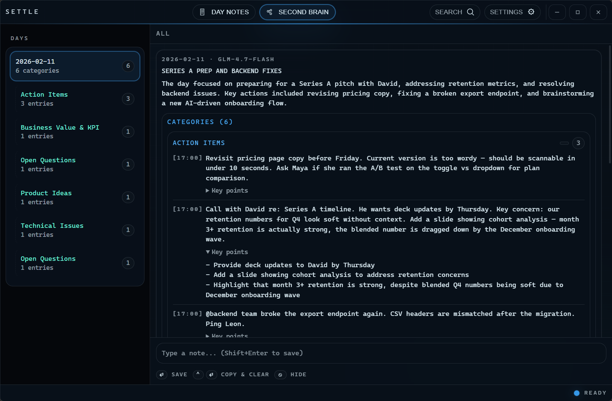
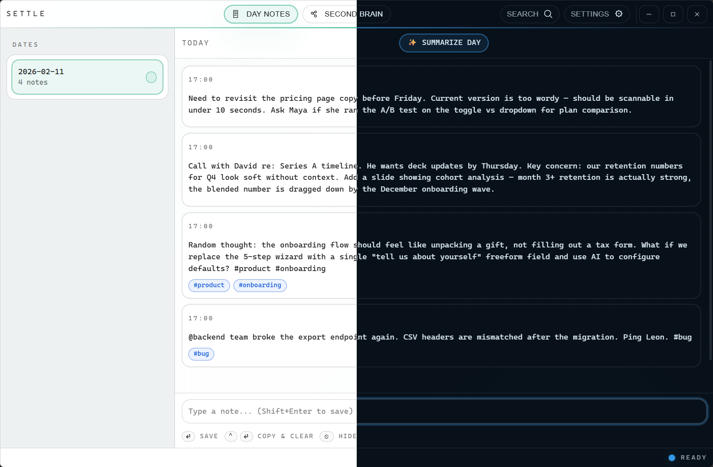

Day Notes
Append-only, timestamped capture — perfect for meeting notes, ideas, and quick tasks.
Keyboard-first notes for Windows
Settle is a lightweight notes app built for speed and clarity: append to daily notes in seconds, then retrieve context through summaries, categories, and search — without clutter.

Second Brain: daily summaries, categories, and entries — grouped by day for fast retrieval.
Designed to feel calm and frictionless — capture now, understand later.
Append-only, timestamped capture — perfect for meeting notes, ideas, and quick tasks.
Daily summaries, categories, and extracted entries — grouped by day so context doesn’t vanish.
One search box for raw notes and second brain entries — recall in seconds.
Get your data out anytime: JSON + Markdown exports.
Terminal-inspired UI with multiple themes — including a deep, glassy dark mode.
Designed around flow: save, search, switch tabs, and summarize with shortcuts.
A glassy dark design with bright cyan accents — calm enough for deep work.

The app is built around the keyboard — no hunting for buttons mid-thought.
Tip: on macOS these will use Cmd equivalents once the build ships.
Summaries support OpenAI-compatible APIs, with auto-save or “suggest mode” review.
Windows builds are available on GitHub Releases. macOS is on the roadmap.
Built with Rust + Tauri v2. No cloud sync by default.